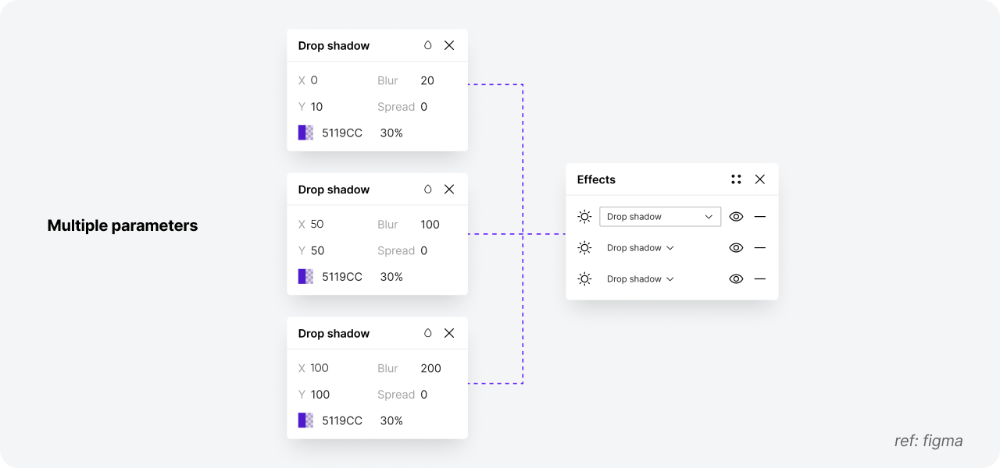
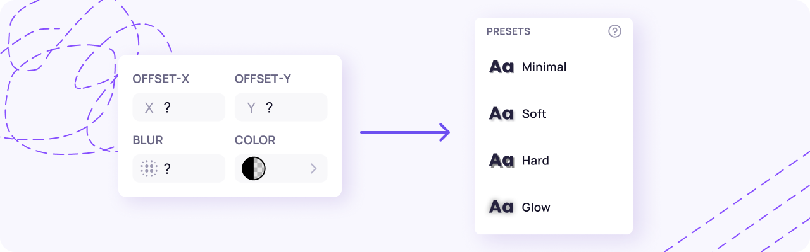
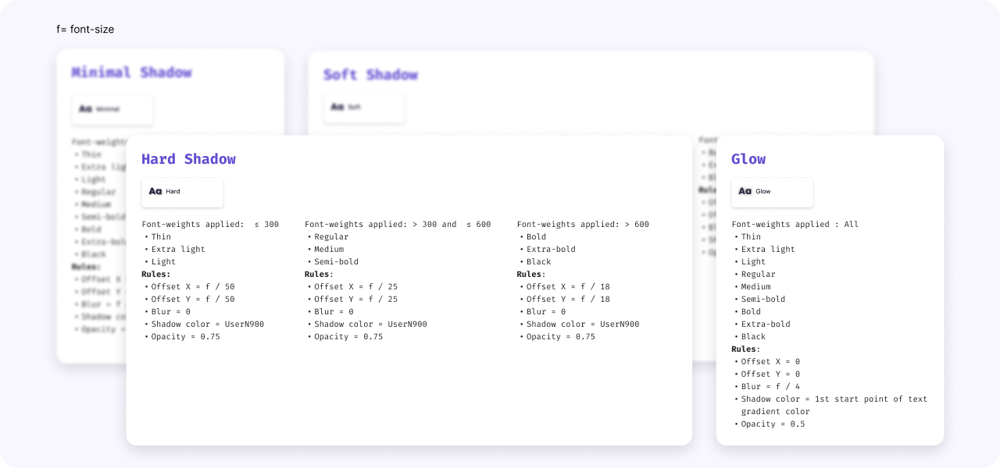
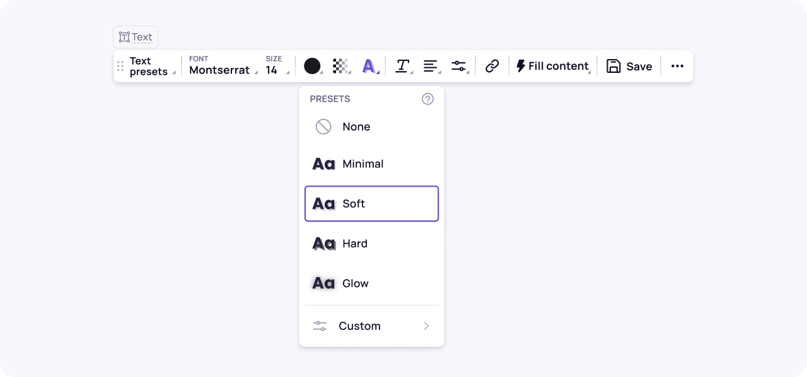
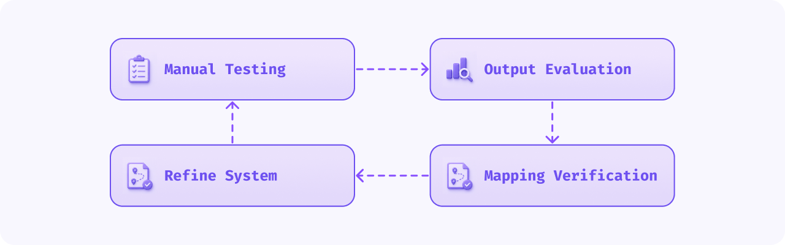

UX/UI System (Human Branch)
A preset-based interaction system that gives users editable text shadow controls and real-time canvas preview, making the output more predictable and controllable.
01
Challenge
Too many parameters, low confidence
Text shadow requires multiple parameters such as offset, opacity, color, and blur. For non-designers, this makes the feature difficult to understand and use.
Users struggle to predict the final result and make confident decisions.

02
Approach
Preset-based interaction
Instead of showing all parameters by default, the system provides predefined presets: None, Minimal, Soft, Hard, and Glow.
Users can
- Select a preset
- Preview the result instantly
- Customize values when needed
This keeps the experience simple while still supporting advanced control.

03
Preset System Design
From visual decisions to system rules
Text shadow behavior is converted into structured, rule-based presets. Each preset follows predefined values and scales across different contexts.
This creates consistent and predictable outputs.

04
UI Design
Simple and predictable interactions
Users can apply presets directly on the canvas and preview results in real time.
The preset list remains the primary interaction model, while detailed parameters are only shown during customization.
This keeps the default workflow lightweight and easy to use.

05
Preset Testing & Validation
Validating rendering accuracy
Testing focused on ensuring that text shadow rendered correctly based on the defined preset rules.
Manual testing and AI output validation were conducted across multiple iterations to improve consistency and accuracy.
